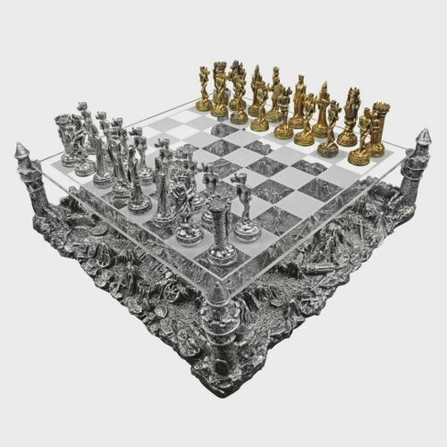
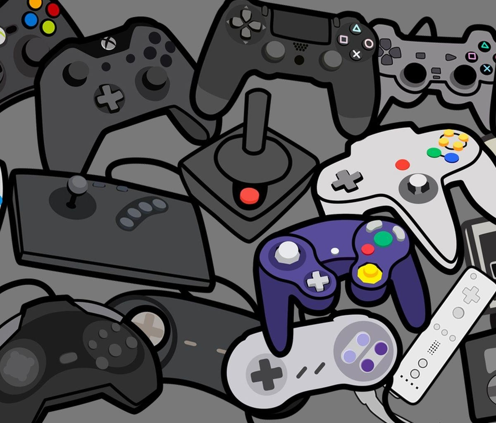

"O xadrez é um jogo de tabuleiro, de caráter competitivo, disputado entre dois participantes. Cada um é representado por peças de cores opostas, geralmente são utilizadas pretas e brancas. O objetivo do jogo é conquistar o “rei” de seu adversário. Para jogar é necessário um tabuleiro composto por oito colunas e oito linhas, o que resulta em 64 casas possíveis para a mobilidade das peças. As peças são compostas de oito peões, duas torres, dois cavalos, dois bispos, uma rainha e um rei." Veja mais sobre "Xadrez" em: https://brasilescola.uol.com.br/educacao-fisica/xadrez.htm
Game, jogo eletrônico, jogos digitais, videogame. Todos esses termos são usados para jogos em que a pessoa que está jogando – jogador ou gamer – interage por meio de periféricos que são conectados ao aparelho, entre eles: controles (joysticks), teclados, monitores, entre outros. Os sistemas eletrônicos – as tecnologias usadas – para um game são chamados de plataformas e elas podem ser as mais diversas possíveis, tais como: computadores, notebooks, celulares, consoles, arcade etc
